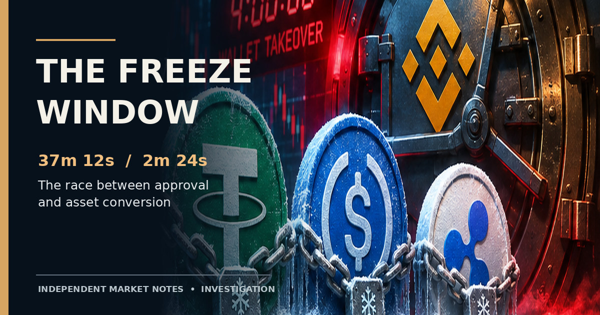

Independent Market Notes / Digital Asset Investigations
On-chain investigation · Stablecoin controls
The freeze came too late. But which delay actually mattered?
The Binance wallet takeover exposed two clocks in stablecoin enforcement: the long interval before anyone proposed a freeze, and the shorter but consequential interval while a proposed restriction awaited execution.
· An examination of October 29 on-chain events · All times UTC

Illustration: the freeze window. Editorial artwork, not an on-chain data visualization.
A freeze can work exactly as its smart contract was designed and still arrive too late to matter. That is the uncomfortable lesson of the October 29 Binance hot-wallet takeover.
Tether, Circle and Ripple ultimately restricted substantial amounts of stolen stablecoins. Yet the attackers had already sent some balances through market makers, lending protocols and decentralized exchanges. The temptation is to call this a failure of slow, centralized governance. The transaction record tells a more precise story.
What interests me is not simply how many minutes passed between the first suspicious transfer and the first blacklist. That number mixes distinct activities: discovering the compromise, identifying the correct chain and address, obtaining permission to act, and executing the restriction on-chain. To learn which delay mattered, we have to pull those activities apart—and ask what had already left the address before each step.
My conclusion is that the largest visible delay was upstream of Tether’s first on-chain proposal, not inside its multisignature approval window. That does not absolve approval design. A separate downstream episode shows that a roughly two-minute pending restriction could give a nine-figure balance time to move. Both things can be true. [1]
Two stablecoins, two very different execution paths
At 21:01:35 UTC, the first documented Ethereum USDT freeze was executed through a multisig contract. The recorded method was confirmTransaction(uint256 transactionId), with transaction identifier 5791. The confirming account called a multisig, not the USDT token directly. [1]
Three minutes and 24 seconds later, at 21:04:59 UTC, Circle’s first documented Ethereum freeze followed a different path. The initiating account called blacklist(address _account) directly on the USDC token contract, targeting 0x5227f603…CB2f8c. The transaction succeeded. [2]
Those calls are not just technical trivia. Tether’s path leaves an identifiable governance object: multisig transaction 5791. That enables reconstruction of the interval between proposal and final confirmation. Circle’s path exposes a direct authorized blacklisting action in the transaction we can see. It does not expose the internal discussions or signoffs that preceded it.
Circle’s published EVM design separates the blacklist role from other powers, including pausing and proxy administration. Tether’s blacklist and black-funds destruction capabilities are also distinct actions. A successful blacklist is not evidence of an asset being burned, transferred into custody, or reimbursed. [3]
The first Tether freeze: where 37 minutes went
Reference point: reported main Ethereum sweep at 20:24:23 UTC, October 29, 2026. Proposal and confirmation times come from the linked on-chain transactions.
20:24:23Main Ethereum sweep
20:59:11Tether blacklist proposal submitted
21:01:35Multisig confirmation and reported freeze
34m 48s before proposal (93.5%)2m 24s proposal to execution (6.5%)
The first interval is not an independently measured “approval delay.” It contains several unknown activities, including detection, escalation and address identification. Sources: reported sweep chronology; Ethereum transactions proposal and confirmation.
The 34-minute mystery is not what it first seems
The main Ethereum sweep was reported at 20:24:23. The transaction initiating Tether’s blacklist proposal was confirmed at 20:59:11. Its calldata identified the USDT contract and the receiving wallet; its embedded token call was addBlackList(address). The confirming multisig transaction arrived at 21:01:35. [1][4]
Subtracting those timestamps gives 37 minutes 12 seconds from the sweep to the freeze, but only 2 minutes 24 seconds from proposal to execution. In other words, approximately 93.5% of the observed interval elapsed before the first public proposal. That calculation is unambiguous; its causal meaning is not.
It would be misleading to label the entire pre-proposal period bureaucratic delay. The public transaction record cannot tell us precisely when Binance noticed the unauthorized movement, when Tether was contacted, which wallets were identified at each moment, or how long any legal or operational approval took. A substantial portion may have been spent detecting and tracing an active compromise; another portion may have been avoidable. We do not know the split.
Nor should the remaining 144 seconds automatically be classified as a technical minimum. Ethereum requires authorized execution in an accepted block. It does not require every token issuer to wait minutes between submission and enforcement. A multisig signature threshold is a security policy encoded in an administrative system, not a universal property of stablecoin transfers.
There is a trade-off here. Reducing the number of required signers or pre-authorizing an emergency key might speed containment; it would also increase the damage that a compromised or misused emergency credential could inflict on innocent holders. A rigorous critique of authorization latency has to account for that risk.
A $130 million transfer inside an open proposal window
The most striking reported episode was not the first freeze at all. It was a later proposal against a downstream USDT wallet.
According to the StableScan-based reconstruction discussed in the incident analysis, Tether proposed a blacklist for the wallet abbreviated 0x8d5390…b8639a at 21:00:59. The wallet reportedly held 130 million USDT. At 21:01:59—one minute after proposal submission—the entire reported balance moved to another wallet. The freeze executed at 21:02:47, when the targeted address was already empty.
This is the clearest causal counterfactual in the case. If the blacklist had become effective before the outgoing transfer was included, the reported transaction from that address would have failed under the blacklist rules. The proposal preceded the movement. Enforcement followed it. The public record therefore identifies a genuine address-level containment opportunity, not merely an abstract preference for speed.
What that counterfactual does—and does not—meanThe targeted address could have been immobilized if execution preceded its outgoing transfer. That is not the same as proving an additional $130 million would have been permanently recovered. Funds sent onward were subject to later tracing and, in some instances, further freezes. Nor does the sequence prove that the attacker watched the public proposal and reacted to it.
There is another caveat worth taking seriously. A deterministic counterfactual assumes the same transfer ordering except for an earlier freeze. In a real adversarial environment, the attacker might route through a different wallet, front-run a known submission, or alter behavior after observing a faster response. The claim is strongest at the level of this specific transaction from this specific wallet.
By the time Tether proposed its first freeze, some conversions were complete
The other side of the story is far less flattering to a thesis focused only on multisig speed. Crystal’s reported chronology places an initial $50 million USDT conversion around 20:34, followed by roughly $275 million of market-maker conversions between 20:36 and 20:50. A separate $60 million USDT collateral position at Aave was reportedly established at 20:57. These observations were cited in the incident reconstruction, but the individual swap and collateral transaction hashes have not been assembled into a complete audited ledger for this article.
The significance is straightforward. Even if proposal 5791 had executed instantly at 20:59:11, it would not have undone token swaps that had already settled. Once stolen stablecoins have been exchanged for native ETH, the original issuer’s blacklist authority no longer reaches that ETH. Blocking a later wallet is not retroactive control over an earlier completed swap.
The reported Tron sequence offers a parallel example. Approximately 612.7 million USDT reached an initial receiving address at 20:22:45. A major downstream transfer of around $300 million began near 20:45; approximately $234 million was subsequently described as entering SUN.io routes. Tether’s first reported Tron freeze occurred at 21:09:12. The opportunity to block that initial outflow lay before the transfer, not merely a few minutes before the later freeze.
Ripple’s RLUSD provides a third timing comparison. Crystal reported approximately $48 million of RLUSD sales from 21:42 to 22:00; a freeze of roughly $40.5 million followed at 22:00:59. A restriction effective before the first sale could plausibly have stopped those reported sales from the targeted address. But without a verified issuer notification timestamp, the public record cannot tell us why the intervention came when it did.
The useful control case: Circle did not need to win every second
Circle’s first USDC blacklist was confirmed at 21:04:59, later than Tether’s first Ethereum action. Yet Crystal’s reconstruction reported that approximately $823 million in stolen USDC remained at the primary receiving address and was captured by the freeze. The last inbound portion reportedly arrived around six minutes earlier.
That changes how we should judge latency. If the relevant USDC was still in the address at enforcement, a faster freeze would have provided more margin but would not necessarily have prevented an additional documented conversion. The operational outcome was already favorable on the narrower primary-wallet measure.
It also cautions against treating an issuer’s aggregate freeze announcement as a recovery ledger. Circle later described approximately $1.1 billion of USDC associated with the incident as frozen, a broader characterization than the initial primary-wallet tally. Other investigators reported totals near $2.67–$2.85 billion, sometimes including assets seized or intercepted by different means. Those amounts cannot be added or reconciled without common scope, timestamps and wallet-level accounting.
Which earlier action could have changed what?
Reported incident times, UTC October 29, 2026. These are transaction-specific counterfactuals, not estimates of additional dollars ultimately recoverable.
Asset / path
Observed freeze
Relevant earlier cut-off
Defensible conclusion
Ethereum USDT, first wallet
21:01:35
Before initial conversions around 20:34
Approval at 20:59 could not reverse completed sales.
Ethereum USDT, downstream 130m wallet
21:02:47
Before 21:01:59 transfer
Earlier effective blacklist would stop the cited outgoing transfer.
Tron USDT
21:09:12
Before major onward transfer near 20:45
Correct early target could prevent onward movement from that address.
RLUSD
22:00:59
Before reported sales starting 21:42
Earlier effective freeze could block the cited sales from the targeted wallet.
USDC primary wallet
21:04:59
Not shown necessary for recorded primary-wallet balance
Reported ~$823m was immobilized; no extra primary-wallet sale identified.
Secondary transaction sequencing and reported amounts are attributed to the incident tracing cited in this narrative; not all underlying wallet-hop transactions are independently linked here. These rows should not be interpreted as a deduplicated loss or recovery calculation.
What is technically unavoidable—and what remains hidden?
A freeze has a genuine technical floor: the correct administrator must possess the authority required by the deployed contract, construct a valid action, and get an effective transaction included in the relevant chain. Cross-chain balances add separate enforcement surfaces. A blacklist on Ethereum does not automatically freeze a token balance on Tron; native ETH is not controlled by the USDT administrator at all.
The rest of the interval is a mixture of engineering and policy. A multisig threshold creates a deliberate approval requirement. Coordination between Binance, investigators and issuers creates additional dependency. Incident detection and address attribution impose operational work. Some of that may be irreducible in a real emergency; some may be improvable with better monitoring, pre-agreed escalation, and carefully limited emergency powers.
The on-chain record tells us when permissions were exercised. It does not independently establish when reliable information first reached a decision-maker. To assign responsibility for the 34-minute-48-second pre-proposal interval, we would need time-stamped incident alerts, issuer notification receipts, internal escalation records, and a verified history of signer confirmations. Anything more precise would be invented certainty.
There is also a methodological trap in summing every outbound stablecoin transfer as a permanent escape. A balance can be moved, deposited as collateral, converted, moved again, or frozen downstream. The economic value that finally exited an issuer’s reach must be reconstructed across linked transactions without double counting intermediate hops.
The market-structure lesson
The Binance episode does not prove that stablecoin blacklists are ineffective. They demonstrably immobilized significant balances. Neither does it prove that simply increasing administrative centralization would have stopped the theft. Circle’s favorable primary-wallet outcome and Tether’s early pre-proposal gap show that where the assets are matters as much as how fast a button can be pressed.
What it does reveal is a mismatch between the speed of on-chain value movement and the layered systems responsible for emergency intervention. Traders and automated routers can convert or disperse value before governance has established the right target. After a public proposal appears, the remaining confirmation window becomes another observable race.
The crucial metric is not “minutes until the first freeze.” It is how much value remained reachable at each decision point—and how much left before the restriction became effective.
I would judge future issuer responses against three clocks: time until the right address is identified, time until the restriction is formally proposed or authorized, and time until the restriction becomes effective. Then I would map actual transfers against those cut-offs, asset by asset.
Under that test, Tether’s first Ethereum multisig was relatively quick once submitted, but much of the initial conversion activity was already beyond its reach. Another pending freeze left a reported 130 million USDT free to depart its targeted address. Circle’s principal USDC freeze succeeded despite being later on the clock. These are not contradictory findings; they are the point.
The real question raised by Binance is not whether issuers have the power to freeze. It is whether they can bring that power to bear on the right address before the economic value changes form. On October 29, sometimes they could. Sometimes the clock—and the attacker—got there first.
Transaction record and source notes
All incident timestamps in this article are UTC on October 29, 2026 unless explicitly stated otherwise. Primary transactions below are directly inspectable; secondary tracing figures are attributed and should not be mistaken for a complete independently reproduced wallet ledger.
Tether blacklist proposal.Ethereum transaction, block 26,300,942; recorded at 20:59:11; input contains the USDT target contract and embedded blacklist calldata.
Secondary incident tracing. The $130m downstream sequence, Tron routing, RLUSD conversions, primary-wallet USDC amount and aggregate freeze estimates draw on the attributed Crystal, StableScan, Chainalysis, TRM and Elliptic reconstructions discussed in the contemporaneous incident record. The underlying transaction-by-transaction supporting hashes are not fully enumerated here; those claims are correspondingly described as reported rather than independently audited.